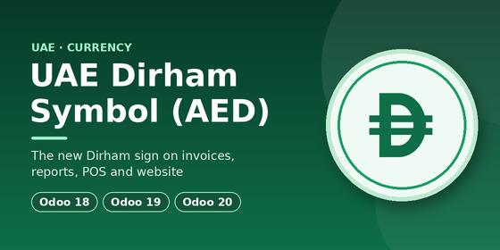
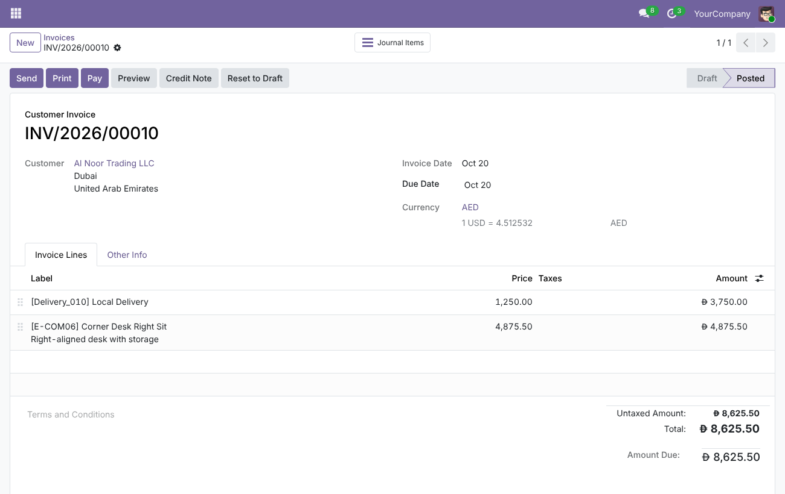
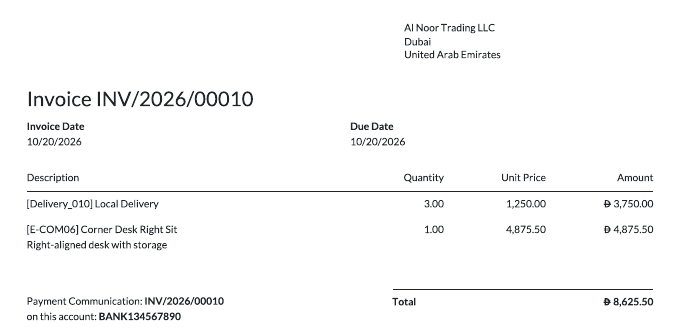
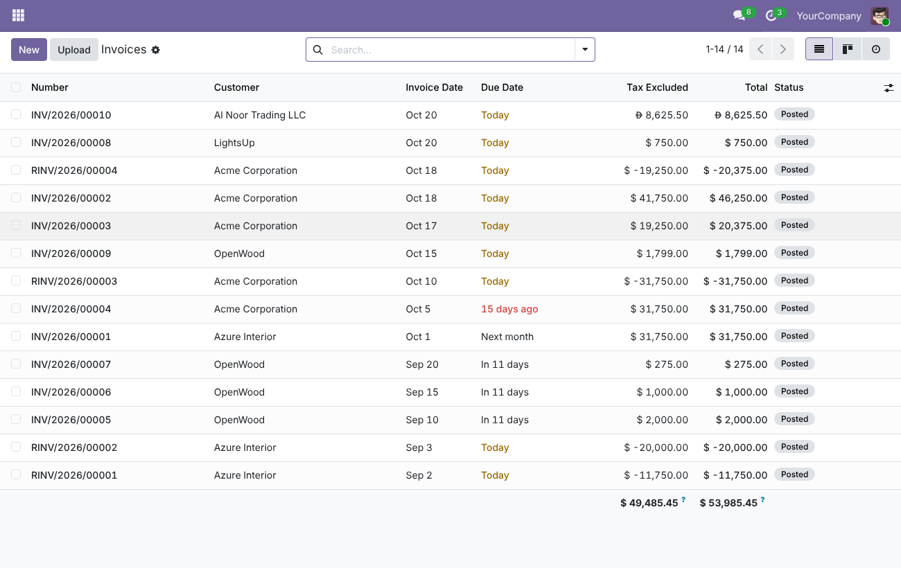

The UAE Dirham sign (U+20C3) is new: it joined Unicode in version 18.0, and Odoo still shows 'AED' by default.
This module displays the official sign today, using a small font for devices that don't support it yet.
Once Odoo supports the sign natively, we'll announce it here and discontinue this module.
Uninstalling the module restores 'AED', or Odoo's own sign if supported, without changing anything else in your database.



Support: odoomates@gmail.com
Contributor: Akshay Manoj